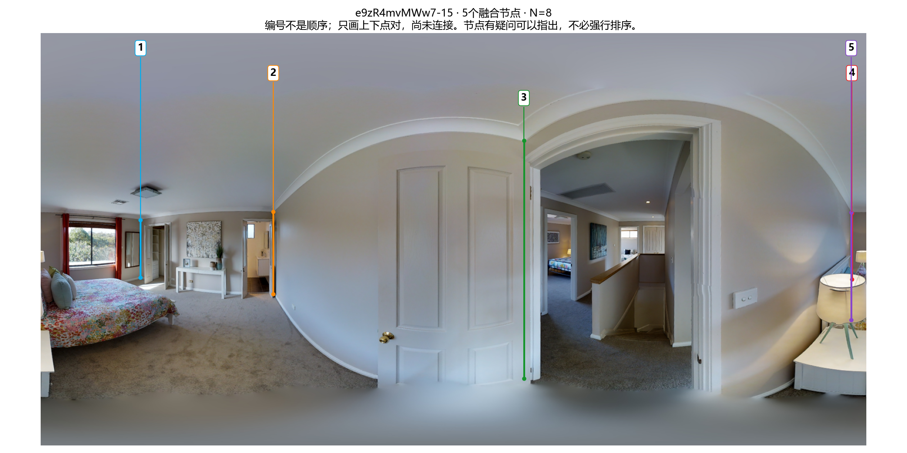
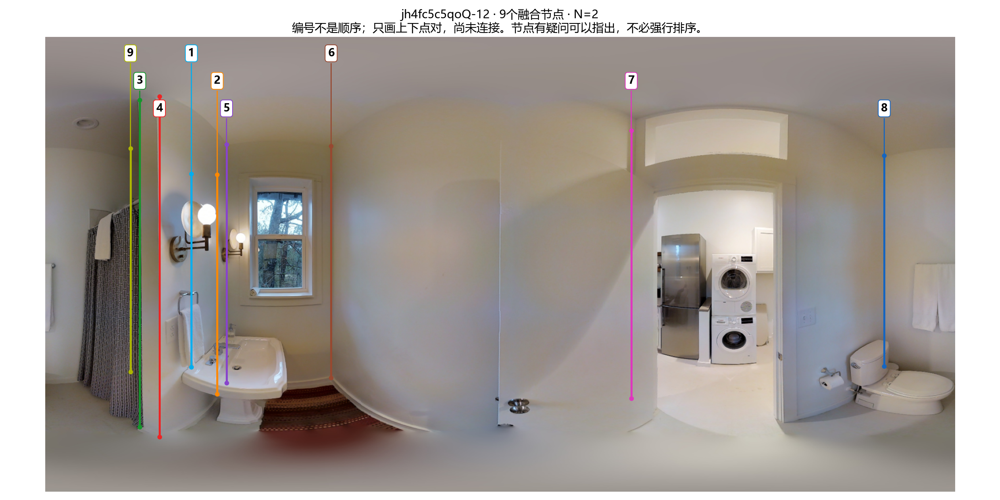
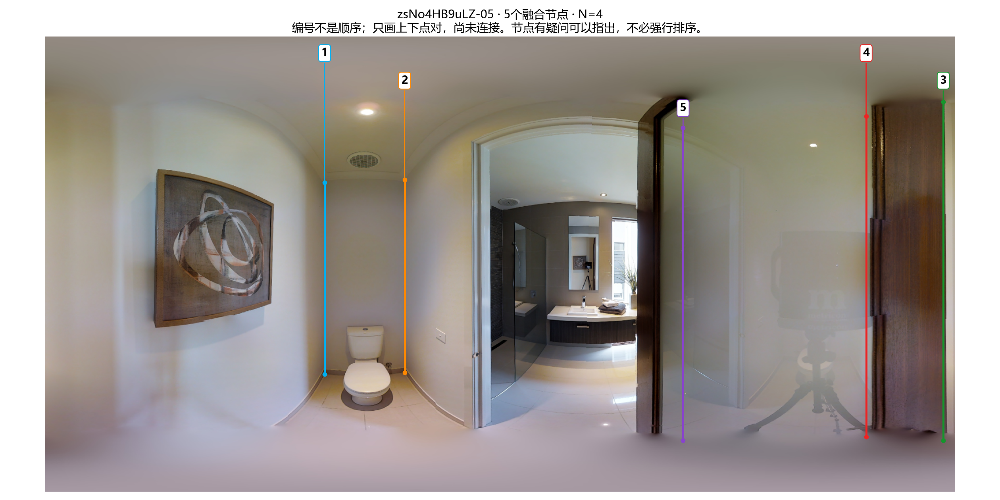

本页原编号供回溯：e9z-15已按反馈合为四节点，zs-05已按x排序；jh4改为两人分歧展示，不再要求直接排九节点。 e9z新结果 · jh4原答对照 · zs已排序结果
回复格式：图片名：1→3→…→1。编号只标识节点，不是算法建议顺序；本次只改顺序，不改票数、对应或坐标。若节点本身有问题，可以指出并暂不排序。
票数：1号 8/8；2号 8/8；3号 8/8；4号 4/8；5号 4/8

票数：1号 1/2；2号 1/2；3号 1/2；4号 1/2；5号 2/2；6号 2/2；7号 2/2；8号 2/2；9号 1/2

票数：1号 4/4；2号 4/4；3号 2/4；4号 2/4；5号 4/4
